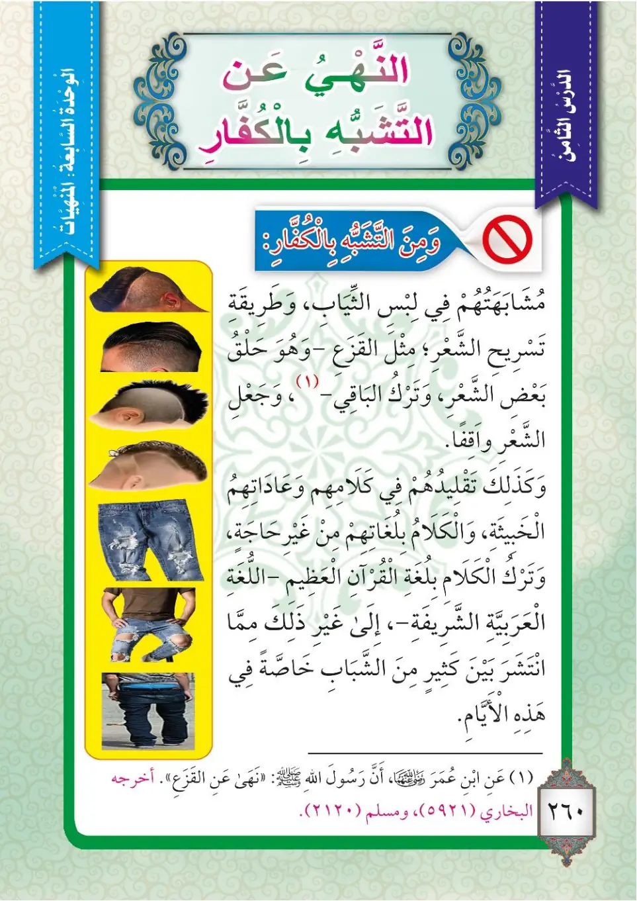

Stage 3·المرحلة الثالثة⭐ Unit 3
النَّهْيُ عَنِ التَّشَبُّهِ بِالْكُفَّارِ The Prohibition of Imitating the Disbelievers
From the Textbookpp. 260–261

نَهَى الْإِسْلَامُ عَنِ التَّشَبُّهِ بِالْكُفَّارِ فِي جَمِيعِ أُمُورِهِمْ، كَمَا نَهَى عَنْ مَحَبَّتِهِمْ وَمُوَالَاتِهِمْ؛ لِأَنَّهُمْ كَفَرُوا بِاللَّهِ، وَلَمْ يَشْهَدُوا أَنْ لَا إِلَهَ إِلَّا اللهُ وَأَنَّ مُحَمَّدًا رَسُولُ اللهِ.
Naha al-Islamu 'ani at-tashabbuhi bil-kuffari fi jami'i umuriHim, kama naha 'an mahabbatihim wa muwalatihim; li'annaHum kafaru billahi, wa lam yashhadu an la ilaha illallahu wa anna Muhammadan rasulu Allah.
Islam forbade imitating the disbelievers in all of their affairs, just as it forbade loving them and allying with them; because they disbelieved in Allah, and did not bear witness that there is no god but Allah and that Muhammad is the Messenger of Allah.
இஸ்லாம், காஃபிர்களை (இறைமறுப்பாளர்களை) அவர்களின் எல்லா விவகாரங்களிலும் பின்பற்றுவதைத் தடை செய்தது; அவர்களை நேசிப்பதையும் அவர்களுடன் கூட்டுசேர்வதையும் தடை செய்ததைப் போன்றே. ஏனெனில் அவர்கள் அல்லாஹ்வை மறுத்தனர்; "அல்லாஹ்வைத் தவிர வேறு இறைவன் இல்லை; முஹம்மது ﷺ அல்லாஹ்வின் தூதர்" என்று சாட்சியம் கூறவில்லை.
عَنْ أَبِي سَعِيدٍ الْخُدْرِيِّ رَضِيَ اللهُ عَنْهُ أَنَّ النَّبِيَّ ﷺ قَالَ: «لَتَتَّبِعُنَّ سَنَنَ مَنْ كَانَ قَبْلَكُمْ شِبْرًا بِشِبْرٍ، وَذِرَاعًا بِذِرَاعٍ، حَتَّى لَوْ سَلَكُوا جُحْرَ ضَبٍّ لَسَلَكْتُمُوهُ». قُلْنَا: يَا رَسُولَ اللهِ! الْيَهُودُ وَالنَّصَارَى؟ قَالَ: «فَمَنْ؟». أَخْرَجَهُ الْبُخَارِيُّ (3456) وَمُسْلِمٌ (2669) وَاللَّفْظُ لِلْبُخَارِيِّ.
'An Abi Sa'idin al-Khudriyyi radiyallahu 'anHu anna an-nabiyya ﷺ qala: «Latattabi'unna sunana man kana qablaKum shibran bishibrin, wa dhira'an bidhira'in, hatta law salaku juhra dabbbin lasalaktumuHu». Qulna: ya rasula Allah! al-yahudu wan-nasara? Qala: «Faman?». Akhrajahu al-Bukhariyyu (3456) wa Muslimun (2669) wal-lafzu lil-Bukhariyyi.
Abu Sa'id al-Khudri, may Allah be pleased with him, reported that the Prophet ﷺ said: "You will certainly follow the ways of those before you, span by span and cubit by cubit, until even if they entered a lizard's hole, you would enter it." We said: "O Messenger of Allah, the Jews and the Christians?" He said: "Who else?" Recorded by al-Bukhari (3456) and Muslim (2669), and the wording is al-Bukhari's.
அபூ ஸயீத் அல்-குத்ரீ (ரலி) அறிவித்தார்கள்: "உங்களுக்கு முன் வாழ்ந்தவர்களின் வழிமுறைகளை நீங்கள் கண்டிப்பாகப் பின்பற்றுவீர்கள் - ஸ்பேன் ஸ்பேனாக, முழம் முழமாக - அவர்கள் ஒரு பல்லியின் புற்றுக்குள் நுழைந்தாலும் அதில் நீங்கள் நுழையும் வரை" என்று நபி ﷺ கூறினார்கள். "அல்லாஹ்வின் தூதரே! யூதர்களையும் கிறிஸ்தவர்களையுமா?" என்று நாங்கள் கேட்டோம். "வேறு யாரை?" என்று கூறினார்கள். (புகாரி 3456, முஸ்லிம் 2669 - சொல்லமைப்பு புகாரியின்து)
وَمُشَابَهَتُهُمْ فِي لَبْسِ الثِّيَابِ، وَطَرِيقَةِ الشَّعْرِ، مِثْلِ الْقَزَعِ -وَهُوَ: حَلْقُ بَعْضِ الشَّعْرِ وَتَرْكُ الْبَاقِي-؛ وَكَذَلِكَ تَقْلِيدُهُمْ فِي كَلَامِهِمِ الْخَبِيثِ وَعَادَاتِهِمْ، وَالْكَلَامُ بِلُغَاتِهِمْ مِنْ غَيْرِ حَاجَةٍ، وَتَرْكُ الْكَلَامِ بِلُغَةِ الْقُرْآنِ الْعَظِيمِ -وَهِيَ اللُّغَةُ الْعَرَبِيَّةُ الشَّرِيفَةُ-؛ وَغَيْرُ ذَلِكَ مِمَّا انْتَشَرَ بَيْنَ كَثِيرٍ مِنَ الشَّبَابِ خَاصَّةً فِي هَذِهِ الْأَيَّامِ.
Wa mushabahatuHum fi labsi ath-thiyab, wa tariqati ash-sha'r, mithli al-qaza' -wa Huwa hulqu ba'di ash-sha'ri wa tarqu al-baqi-; wa kadhalika taqliduHum fi kalamiHim al-khabith wa 'adatihim, wal-kalamu bilughatihim min ghayri hajah, wa tarqu al-kalami bilughati al-Qur'ani al-'azim -wa Hiya al-lughatu al-'arabiyyatu ash-sharifah-; wa ghayru dhalika mimma ntashara bayna kathirin mina ash-shababi khasSatan fi hadhihi al-ayyam.
And imitating them in wearing clothes and in the way of the hair, such as al-qaza' -which is shaving part of the hair and leaving the rest-; likewise, imitating them in their evil speech and their customs, speaking in their languages without need, and abandoning speaking in the language of the mighty Quran -which is the noble Arabic language-; and other things that have spread among many of the youth, especially in these days.
அவர்களைப் பின்பற்றுவது: ஆடை அணிவதிலும், தலைமுடி வைக்கும் முறையிலும் - கஸஅ என்பது தலைமுடியின் ஒரு பகுதியை மழித்து மீதியை விட்டுவிடுவதாகும் -; அவர்களின் தீய பேச்சையும் பழக்கவழக்கங்களையும் பின்பற்றுவது; தேவையின்றி அவர்களின் மொழிகளில் பேசுவது; மகத்தான குர்ஆனின் மொழியான - மாண்புமிக்க அரபி மொழியில் பேசுவதை விட்டுவிடுவது; இவை போன்ற பல, குறிப்பாக இக்காலத்தில் இளைஞர்களில் பலரிடையே பரவியுள்ளன.
عَنِ ابْنِ عُمَرَ رَضِيَ اللهُ عَنْهُمَا أَنَّ رَسُولَ اللهِ ﷺ نَهَى عَنِ الْقَزَعِ. أَخْرَجَهُ الْبُخَارِيُّ (5921) وَمُسْلِمٌ (120).
'Ani-bni 'Umar radiyallahu 'anHUma anna rasula Allahi ﷺ naha 'ani al-qaza'. Akhrajahu al-Bukhariyyu (5921) wa Muslimun (120).
Ibn Umar, may Allah be pleased with them both, reported that the Messenger of Allah ﷺ forbade al-qaza' (shaving part of the head). Recorded by al-Bukhari (5921) and Muslim (120).
இப்னு உமர் (ரலி) அவர்கள் கூறினார்கள்: "நபி ﷺ கஸஅ (தலையின் ஒரு பகுதியை மழித்து மீதியை விட்டுவிடுதல்) செய்வதைத் தடை செய்தார்கள்." (புகாரி 5921, முஸ்லிம் 120)